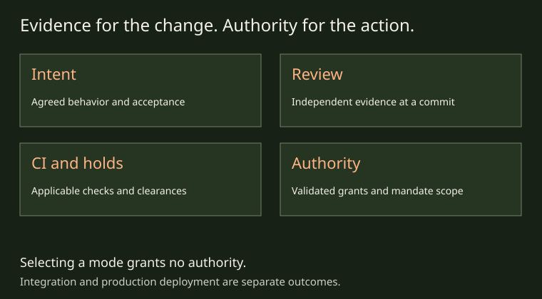

THE GOVERNED SOFTWARE FACTORY
Inspect what allows a change to advance

AIDA's governed workflow makes evidence and authority explicit. Ask what was agreed, which change was checked, who checked it and what authorizes integration. The answers come from several records with different scopes, not from selecting a delivery mode.
Intent and implementation
Acceptance criteria describe the agreed outcome. Code traces and spec-bearing commits connect implementation to that intent. A trace grants no approval or completion credit by itself. An author checks the change before handoff; that check is preparation for independent review.
Independent review at a commit
The ordinary review path requires a reviewer independent of the change's author. Verdict evidence identifies the reviewed commit, and shipping evaluates applicable evidence against the current head. An old approval is not permission to ship arbitrary later work.
There is an explicit, opt-in and audited solo-human self-approval exception for a verified person at a terminal. This does not turn an implementing agent's self-check into independent approval. The review process and current review command help describe the exact evidence and exception contracts.
CI and holds
Applicable required checks and merge holds are separate from the review judgment. A green CI result alone is not review approval or authority to clear a hold. Holds and their clearance rules preserve reasons that require additional action; a tool refusal should be resolved through the authorized path.
This page explains the existing controls. It does not promise every rule is unbypassable by a user who controls the machine or the forge, and it does not introduce a new clearance mechanism.
Grants and mandates
Role grants provide scoped, validated authority. An environment variable naming a role is not itself a grant. A person at an interactive terminal can start and stop a time-boxed mandate; an eligible advisor action still needs the mandate's scope and applicable evidence. Current mandate help documents an eight-hour default and 24-hour maximum, and operator-only work remains outside mandate coverage.
Protected paths and other mandatory human gates remain outside what a mandate can authorize. For example, the runtime gate directory and project authority configuration have protected-path treatment. Sensitive work has additional scope rules; inspect the current mandate and command help instead of assuming that all held work is covered.
Who may do what explains how roles, seats, grants, delegation, mandates and the deputy fit together, with diagrams.
Know the boundary
AIDA is alpha software and Linux-only. Current identity and local file controls operate under a shared Unix user; a same-UID process that forges trusted local files is outside the threat model. Multi-human identity separation is not a security boundary. Harness capabilities and containment support differ, and configuration is not a universal isolation guarantee.
Merging a change is separate from release and production deployment. A project must supply its own deployment policy, credentials and automation. Choosing drain does not grant access to production or prove an application meets its operational obligations.
Read the records at their own scope
The workflow guide separates code history, canonical intent, the cache and local evidence. Store synchronization does not transfer every operational artifact or machine grant. Review, CI, authority and hold records need the validation defined by their own commands.
For operators, inspect aida mandate status, aida role status and the relevant review/PR command help. Contributors can read the verdict implementation and mandate gates. These are evidence references, not invitations to edit protected controls. Return to selectable autonomy to choose the human involvement contract.